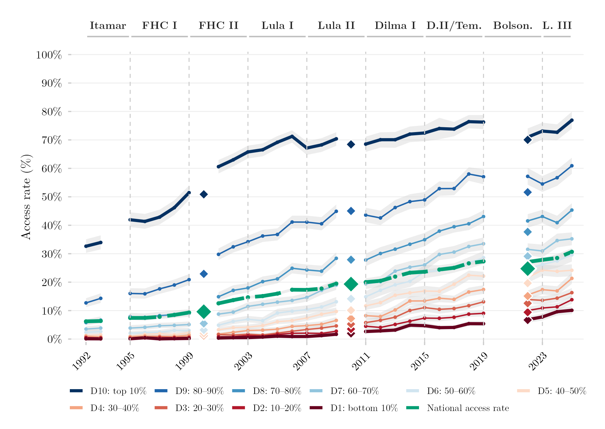
Tertiary education access rate by income decile, historical line series from 1992 onward.
Long-run expansion and sector composition of undergraduate enrollment in Brazil, 1980–2024.
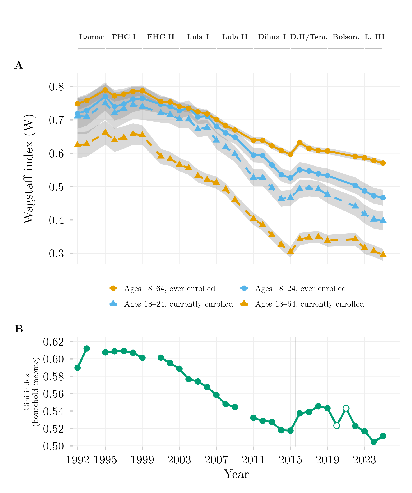
Relative inequality in tertiary education access and enrollment, by age group, measured via the Wagstaff concentration index.
Time series of income inequality in tertiary enrollment by network type (public vs. private), measured via the Wagstaff concentration index.
Stacked composition of income deciles among tertiary-education students aged 18–24, over time.
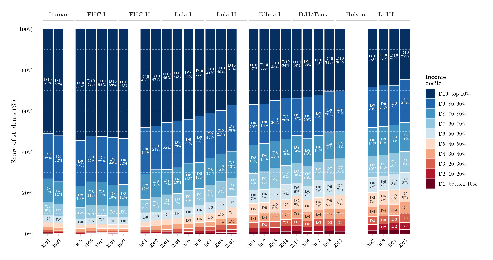
Stacked composition of income deciles among tertiary-education students aged 18–64, over time.
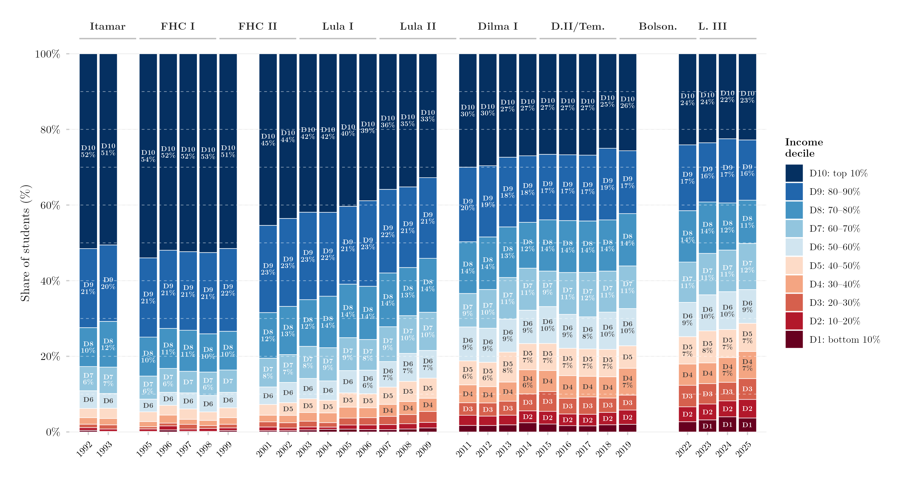
Stacked composition of income deciles among actively enrolled tertiary students aged 18–24, over time.
Stacked composition of income deciles among actively enrolled tertiary students aged 18–64, over time.
Dot plot of annualized real per-capita household income growth by income decile and presidential term.
Multi-panel figure combining income inequality indices (Gini, Palma ratio) with real income growth by decile.
Line series of secondary education completion rate by income decile.
Higher-education tuition burden relative to household income, by income decile.
Share of 18–24-year-olds in households above fixed real income thresholds, expressed as multiples of the minimum wage.
Average per-capita household income by income percentile, plotted on a log scale.
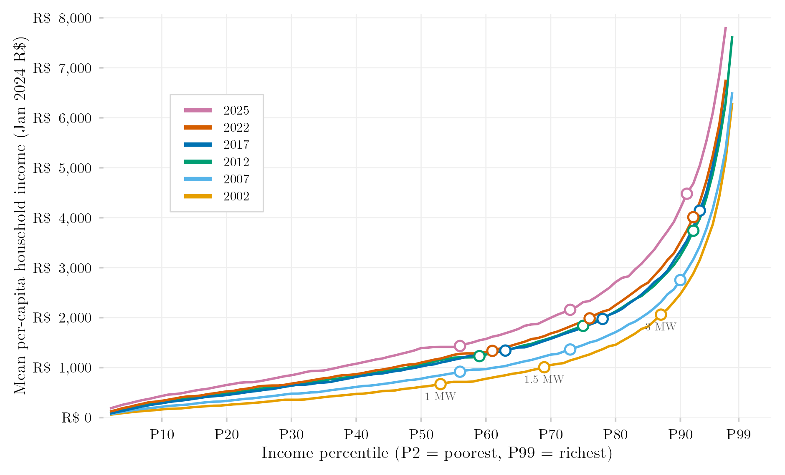
Average per-capita household income by income percentile, linear scale.
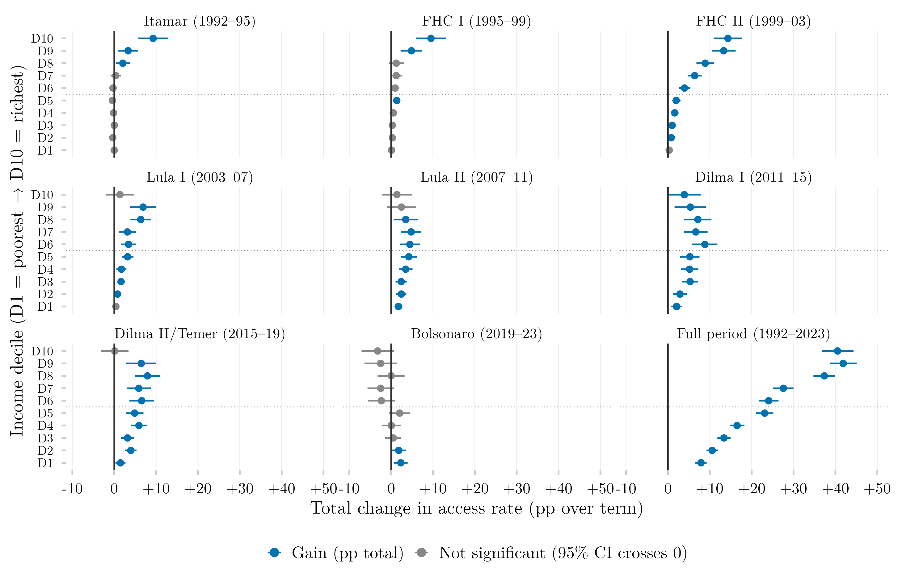
Dot plot of the total change in tertiary education access rate (ever enrolled) by income decile, broken down by presidential term.
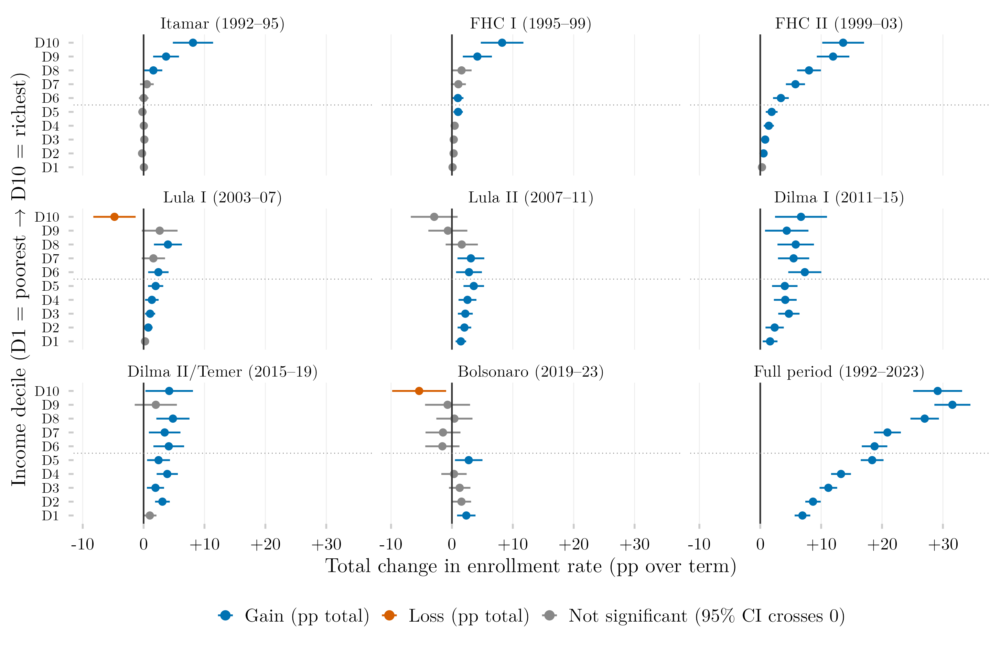
Dot plot of the total change in higher education enrollment rate (ages 18–24) by income decile and presidential term.
Distance learning enrollment and the reach of student aid programs, private sector.
Distribution of household income of entrants by higher education sector.
Household income of entrants by higher education sector and mode of delivery (in-person vs. distance).
Enrollment broken down by sector, access route (quota/general) and time of day (morning/evening/distance).
The distance-education undercount in official statistics and the reconstructed tertiary enrollment totals, 2000–2008.
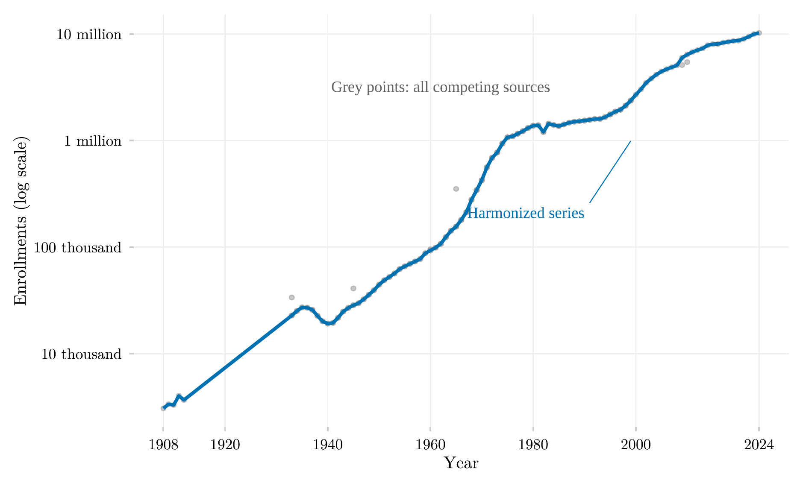
Tertiary education enrollment in Brazil, 1907–2024: the harmonized educabr2 series plotted against competing sources.
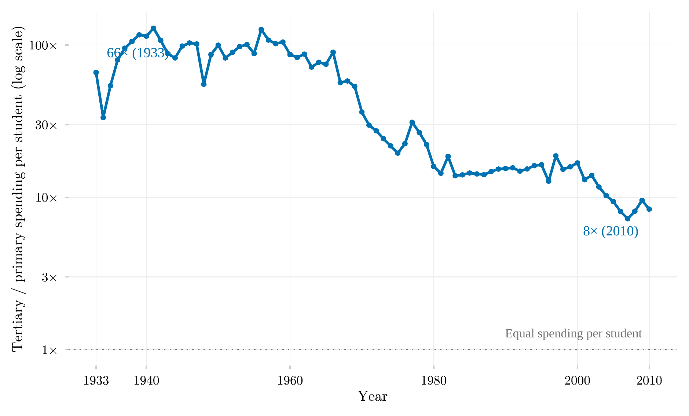
Double ratio of per-student public spending, tertiary over primary education, Brazil, 1933–2010.
Grade progression ratio (GDR6) in São Paulo and Bahia, 1955–2010.
Average years of schooling of the population aged 15–64 in Brazil, by sex, 1925–2015.
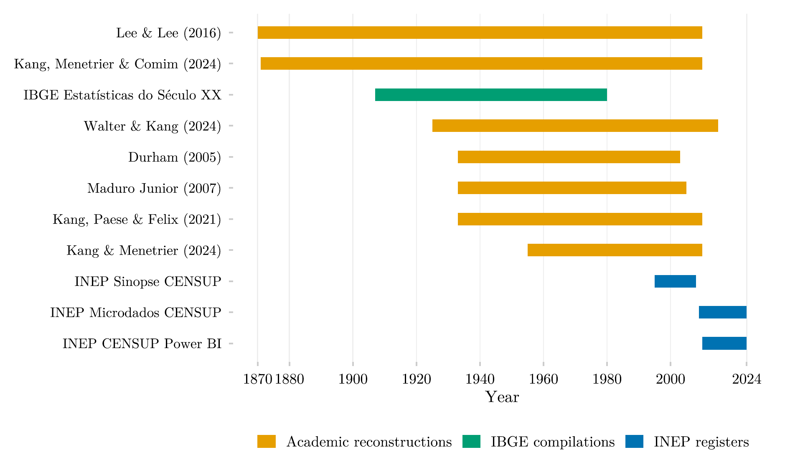
Temporal coverage of the eleven data sources harmonized by educabr2, 1870–2024.
Dot plot of the total change in real per-capita household income (R$/month) by income decile and presidential term.
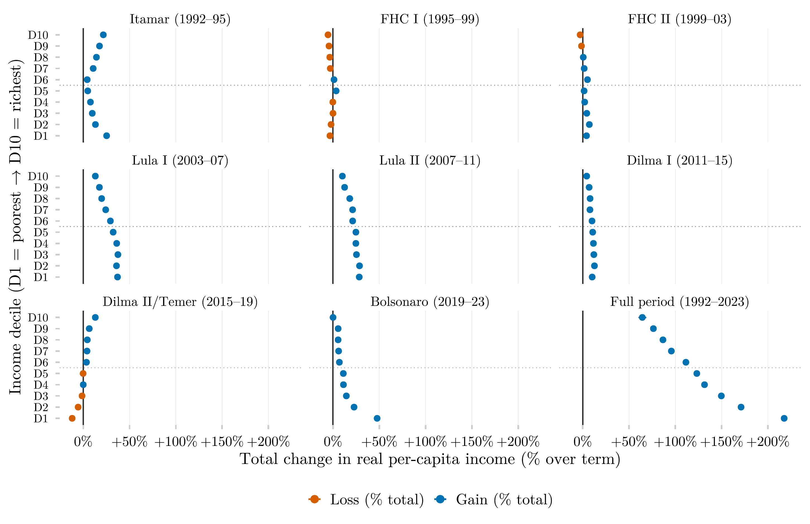
Dot plot of the total percentage change in real per-capita household income by income decile and presidential term.
Income concentration curves for tertiary enrollment by network type (public vs. private), ages 18–24.
Higher-education tuition price series relative to overall consumer prices and to the minimum wage.
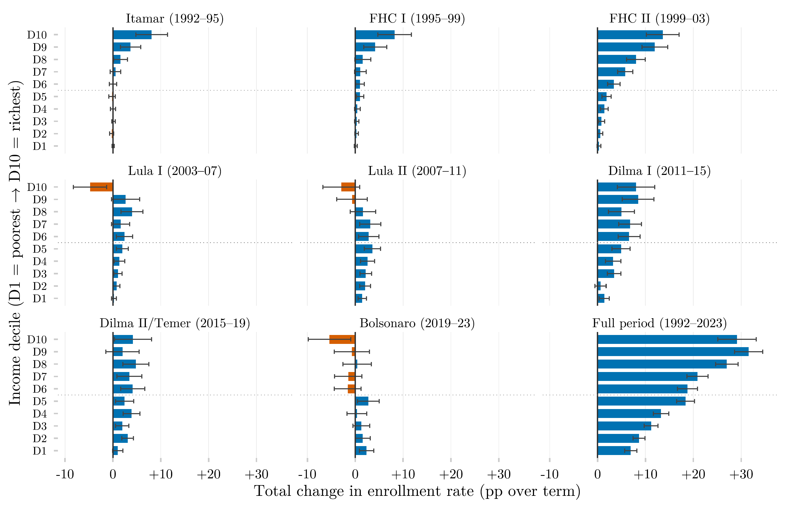
Panel of bar charts showing the total change in higher education enrollment rate (ages 18–24) by income decile, one panel per presidential term.
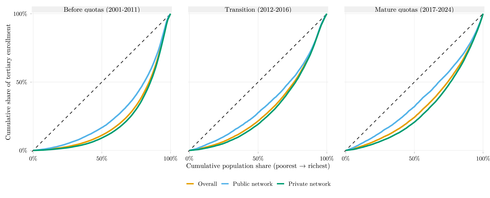
Income concentration curves for tertiary enrollment by network (public vs. private), before, during, and after the 2012 quota law.